2019
-
요즘 관찰하고 있는 몇 가지가 있다.
19.05.02요즘 관찰하고 있는 몇 가지가 있다. 사물, 공간, 사진. 사물과 공간은 <입체와 공간> 수업 과제인 관찰일기를 쓰기 위해, 사진은 다른 표현 매체로 이용하기 위해 관찰하고 있다. 처음엔 의무나 욕심으로 바라본 것들이지만, 지금은 애정을 가지고 탐구하듯이 바라보고 있다. 특히나 공간을 아주(?) 깊게 보고 있는데, 공간은 여러 요소로 이루어져 있기 때문이다. 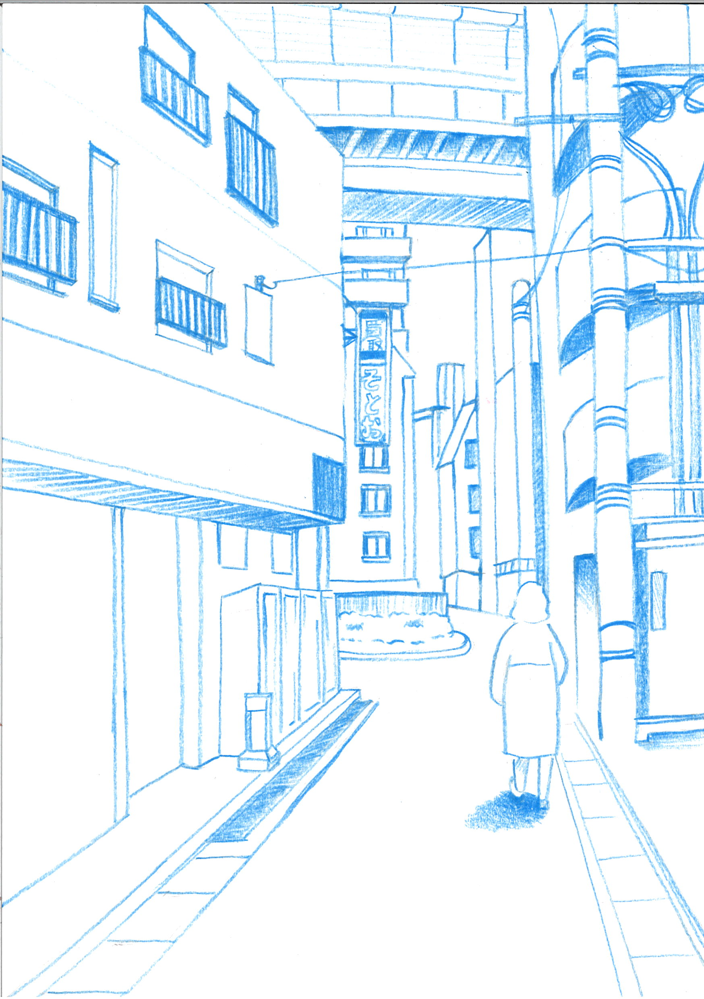나는 그 중 공간에서 이루어지는 행위와 관계를 중점적으로 본다. 사람과 사람, 사람과 사물, 사물과 사물이 이루어지는, 또는 이루는 맥락. 이것들이 한 곳에 녹아져 모든 행위나 분위기가 자연스러워질 때, 느껴지는 안정감이 좋다. 이런 관찰을 통해 나도 몰랐던 나의 태도나 흥미, 그 이유에 대해 알게 되었다. 과제도 재밌고, 나 자신도 재밌다.
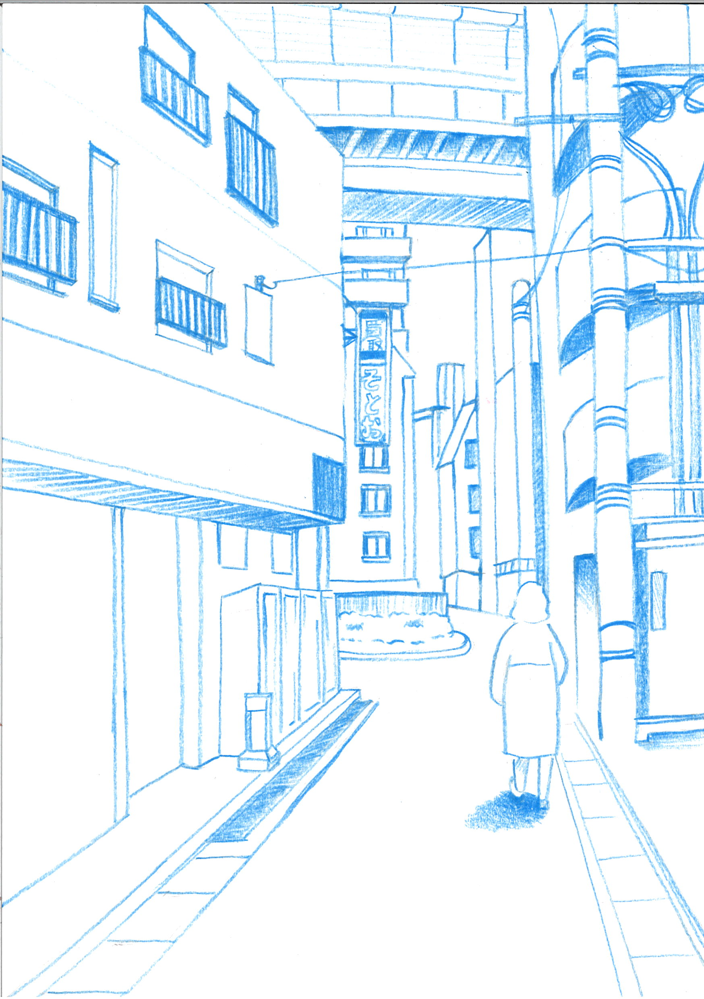나는 그 중 공간에서 이루어지는 행위와 관계를 중점적으로 본다. 사람과 사람, 사람과 사물, 사물과 사물이 이루어지는, 또는 이루는 맥락. 이것들이 한 곳에 녹아져 모든 행위나 분위기가 자연스러워질 때, 느껴지는 안정감이 좋다. 이런 관찰을 통해 나도 몰랐던 나의 태도나 흥미, 그 이유에 대해 알게 되었다. 과제도 재밌고, 나 자신도 재밌다.오전 2시
19.08.06지난겨울에 썼던 다이어리가 눈에 들어왔다. 별로 좋은 기억이 없는 그때는 얼마나 많은 걱정을 묻었을까라는 궁금증에 열었다. 시 수업 필기가 나를 반기고 있었고 나는 그걸 보는 순간 부끄러웠던 과제 발표 시간이 떠올랐다. 매주 금요일마다 있었던 굉장히 어렵고 힘든 시간이었다. 매주 시를 써오고 본인의 시를 낭독하는 수업이었기 때문이다. 눈 한번 질끈 감고 읽으면 되는 것을 그 순간의 나는 너무나 창피했고 열심히 숨어다녔다. 눈에 띄지 않으려 과제도 제대로 해 가지 않았다. 그랬던 나를 반기고 있는 이 필기는 나름 열심히 하고자 했던 그 시절의 나의 흔적 같아 보인다. 그렇게 그냥 지나쳐도 될 것을 잠시 추억에 잠겨 이 생각 저 생각을 하다가 이 글에도 필기를 옮겨보고 싶다는 생각에 몇 문장을 덧붙여본다.
18.11.02
글이란 것은 정확히 말하고자 하는 노력이다. 왜 정확히 말해야 하는가? 이는 싸울 수 있고, 공감할 수 있는 기회이며, 좋은 사람이 될 수 있는 기회이기 때문이다.
18.11.09
시는 세상에 어떻게 도움이 될까? 말하는 방법을 다시 한번 생각해보는 계기가 될 수 있다. 우리가 말하는 방법에 대해서 깊게 생각하고 다양한 방법을 시도하면 인간이 언어로 표현하는 범위가 넓어질 것이다. 이것은 언어에 한정되는 것이 아닌, 다른 작업의 범위가 확장될 수도 있다. 즉, 체험의 범위. 다양한 표현 방식은 힘을 보여줄 수 있다.
18.11.23
왜 하고 싶은지를 알아야 해요. 자랑하고 싶어서?, 반성하고 싶어서?, 사랑하고 싶어서? 그때 당시 명쾌하게 말을 해도 매번, 매년 달라질 수가 있어요. 하나의 이야기만 하면 안 됩니다.
18.11.30
할 말이 끝났다고 해서 끝내는 게 아니라 한, 두 마디 더 해서 이야기를 만들어 봐요. 메시지나 의미가 아니라 이야기. 이야기를 하는 것이 남들과 달라질 수 있는 것입니다. 그 앞까지는 누구나 쓸 수 있는 것이기 때문이죠.상황에 따라 몇 가지 일을 한다.
19.08.10머리가 복잡한 상황에 따라 몇 가지 일을 한다.
첫 번째, 타인에 의해 머리가 복잡할 땐 무작정 걷는다. 더워도 추워도 그냥 걷는다. 집에 돌아가는 길에 버스나 지하철을 타지 않는다거나, 누워있다가 갑자기 일어나서 어딘가를 간다거나 일단 걷고 본다. 다음날 약속이 있어서 미리 기분을 올리고 싶을 땐 일부러 홍대를 간다. 오히려 감정이 격할 땐 한강이나 망원을 가고, 나 자신을 돌아보고 싶을 땐 교보에 간다. 상황에 따라 걷는 장소도 달라진다.
두 번째, 작업과 프로젝트로 머리가 복잡할 땐 일을 다 제쳐두고 청소를 한다. 방바닥을 쓸고 닦고, 설거지와 빨래와 화장실 청소까지. 가장 속 시원한 순간은 한동안 작업하면서 버리지 못했던 과정물을 버리는 순간. 가장 신경 써서 청소하는 공간은 책상이다. 하지만 쌓아둔 책 때문에 별로 청소한 티가 안 난다. 책상뿐만 아니라 신발장 위, 남는 의자 위에도 책을 쌓아두었는데 이건 어떻게 치울 방법이 없어서 그냥 두고 있다.
세 번째, 혼자 쓸데없는 고민으로 머리가 복잡할 땐 한없이 무언가를 본다. 유튜브, 영화, 드라마, 예능 상관없이 그냥 본다. 잠도 안 자고,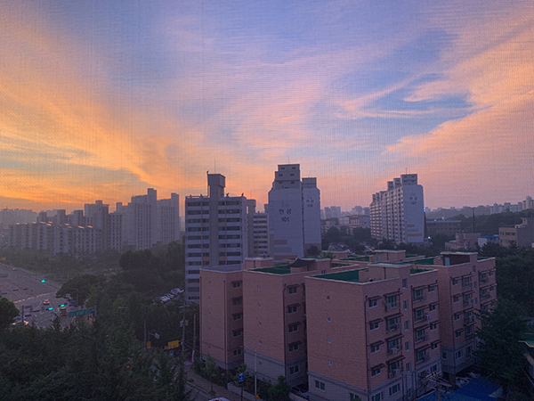밥도 안 먹고 그냥 본다. 그러다가 조금 정신이 돌아올 땐 글을 쓰거나 책을 읽는다. 책도 분야 상관없이 일단 읽고 싶은 책을 읽는다. 요즘엔 ‘삶을 읽는 사고’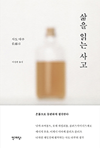라는 책을 읽고 있다. 얼마 전까지는 친구가 빌려준 책을 읽었다. 책을 읽다가 졸릴 때쯤엔 잠깐 노트북을 열어 진행 중인 프로젝트 일들 중에 급한 일들만 처리하고 눕는다.
이렇게 며칠을 살다 보면 다시 파워 인간으로 돌아온다. 일주일을 꽉꽉 채워서 친구들을 만나고 회의 또는 작업 모임,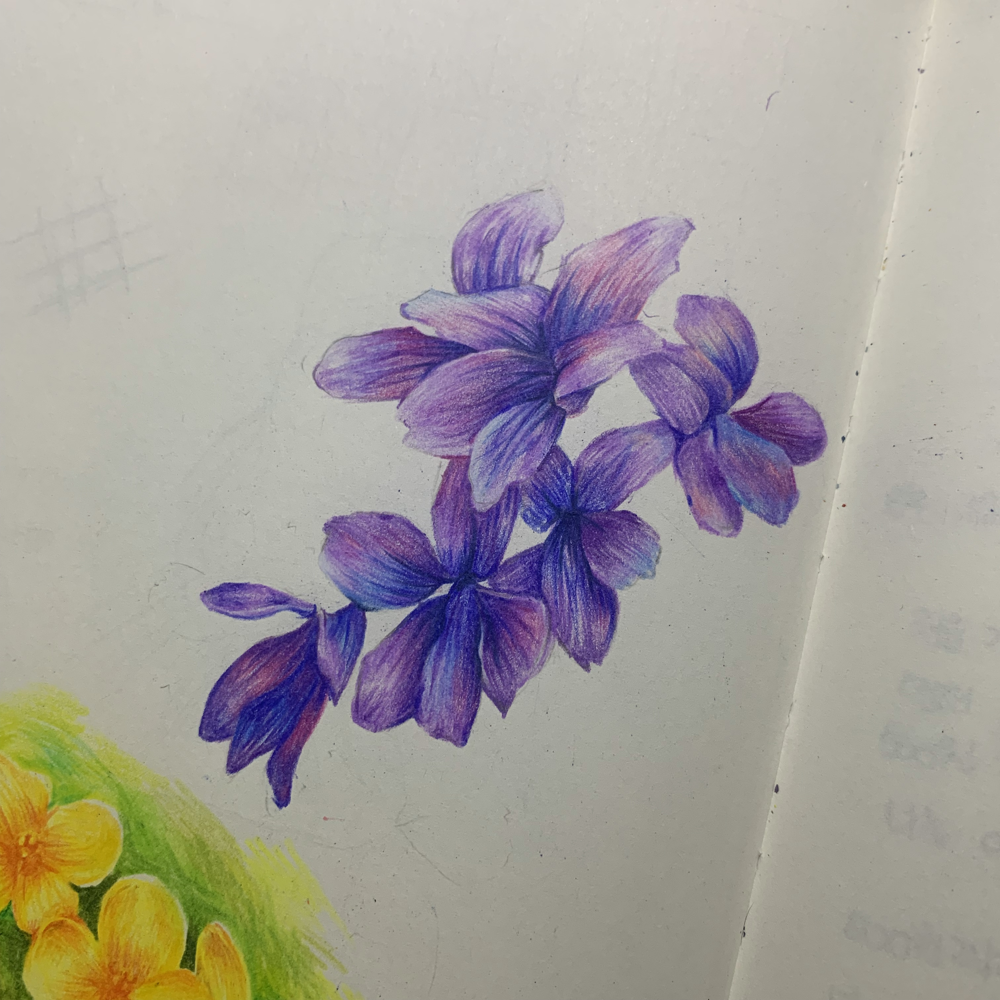전시, 영화를 보러 가는 등 나를 혼자 두지 않는다.기록을 다시 보는 것을 좋아한다.
19.08.14앞을 모르는 상황에서 나의 현 위치를 알 수 있는 좋은 방법이기 때문이다.
‘이번 학기에 나는 얼마큼 성장했고 무엇을 알게 되었구나, 다음 학기에는 이것을 더 많이 알고 싶다.’는 생각들이 나를 달리게 한다.
파티에 들어오기 전까지는 앞만 보고 달리는 게 맞다고 생각해서 기록이 많이 없다. 돌이켜보니 당시에 내가 무엇이 왜 얼마큼 힘들었는지가 기억이 잘나지 않다. ‘그냥 많이 힘들었어. 그런데 지나고 보니 별거 아니더라. 지금은 아무렇지 않아.’라고 말하는 내가 그때의 나에게 미안한 마음이 든다. 분명 그땐 죽을 만큼 힘들었고, 그 일로 현재의 나는 다시 그런 힘든 일을 겪지 말아야지 하고 있는 건데.오늘은 결국 오전 수업을 가지 못했다.
19.10.08오늘은 결국 오전 수업을 가지 못했다.그제 밤을 새고 어제 또한 새벽 4시에 잔 게 문제였을까? 오전 10시 수업인데 11시에 일어났다. 기분이 조금 안 좋았지만 왜인지 모르게 화가 나거나 짜증이 나지는 않았다. 아마 별로 크게 욕심을 가지지 않은 수업이라 그랬던 것 같다. 그래서 오늘은 오후에 내가 가장 좋아하는 수업만 들었고 그 수업 후에는 작업에 욕심을 내지 않고 혼자 책상에 앉아서 참고할 자료를 찾거나 모형을 만들었다.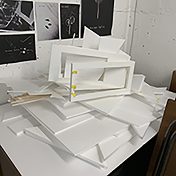하지만 오늘은 꼭 써야 할 것 같아서,
19.11.27. 수그동안 잠을 잘 시간도,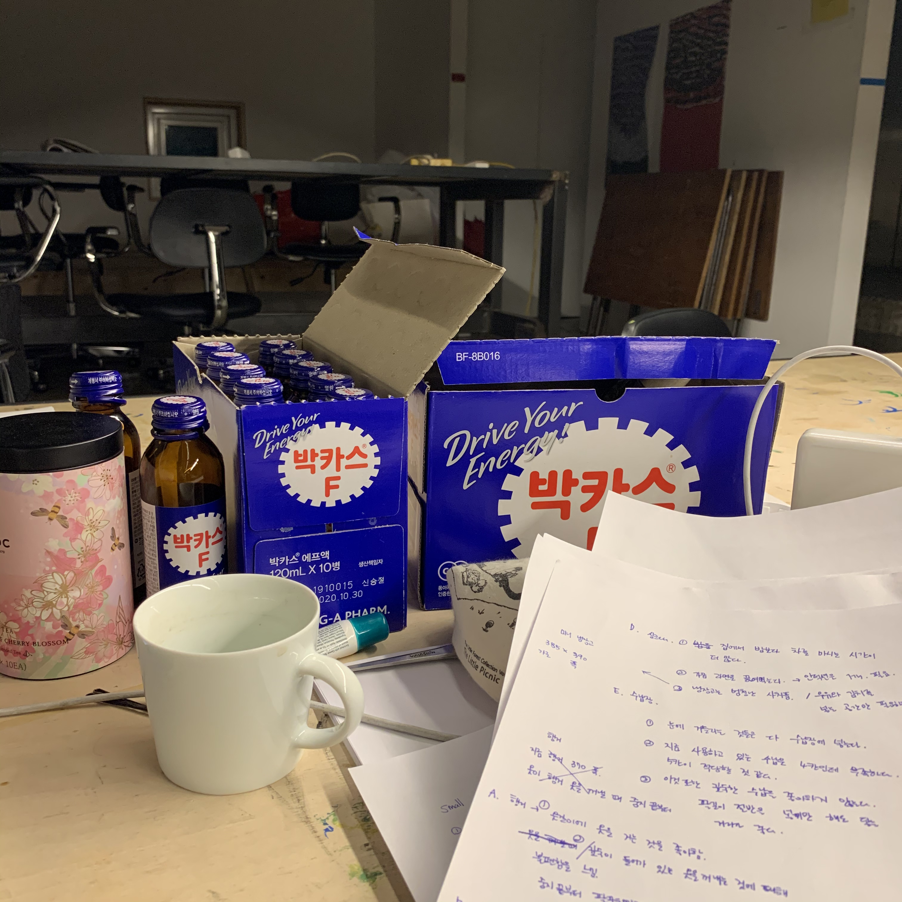밥을 먹을 시간도 없어서 글을 쓸 시간도 없다고 생각하고 미루고 미루었다. 하지만 오늘은 꼭 써야할 것 같아서, 오늘도 안 쓰면 많이 힘들 것 같아서 이 메모 창을 켰다. 방금 오랜만에 중, 고등학교 때 친구와 전화를 하고 왔다. 그동안 회의, 과제를 하느라 전화를 못 받았던 나는 오늘만큼은 꼭 해야겠다고 생각했기 때문에 부재중이 뜬 그 친구의 흔적을 보고 얼른 전화했다. 전화를 해보니 내가 바쁘게 지내는 동안 그 친구는 아주 힘든 시간을 보냈다고 했다. 병원을 다닐 정도로, 약을 복용할 정도로 정신적으로 힘든 시간을 보냈다고 했다. 그 이야기를 듣고 심장이 쿵 내려앉았고 가장 먼저 든 생각은 ‘하루 이틀 봐온 친구도 아니고 8년을 봐온 친구의 상태를 돌아보지 못할 정도로 나는 나의 일만을 해왔구나’였다. 이번 가을 학기가 시작하고 그 친구가 몇 번이나 나에게 만나자고 만날 수 있냐고 연락을 해왔는데 그 신호를 전부 받아들이지 못하고(아니, 않고.) 내 일만 했다. 뭐만 하면 과제랑 일이 너무 많다. 바쁘다. 회의가 있다. 라며 거절을 했기 때문이다. 이런 나에게 다시 한번 전화를 해서 하는 말이 “이번에도 네가 내 전화를 받지 않았으면 나는 정말 엄청난 슬픔이 잠겼을 거야. 심지어 네 전화를 기다리다가 이렇게 바쁜 네가 내 장례식에는 와줄까 라는 생각도 했어.” 할 말을 잃었고 할 수 있는 말이 없었다. 나도 한때 그런 시간을 보냈기 때문에 지금 그 친구의 마음이 어떤지 대충 짐작이 가긴 했지만 정작 상대가 되어 그 상황을 마주하니 무서웠다. 내가 알던 사람이 내 곁에서 영영 사라진다는 것이 겁이 났다. 그러면서 그 친구가 나에게 “네가 바쁜 것 이해해. 나도 병원에 다니기 전까지 그랬으니까. 그래도 영영 가기 전에 네 목소리라도 네 얼굴이라도 보고 싶어서 연락했어”라고 말하는데 몸이 떨리고 눈물이 맺혔다. 잘하고 싶어서 다른 일에 노력이나 시간을 많이 들이는 나의 태도가 나를 갉아 먹고 있고, 내 주변 사람들을 갉아 먹고 있는 것만 같다. 그냥 욕심 많은 나의 마음이 잘못된 것만 같다. 최근 이런 일이 잦아진 것 같다. 바쁘게 이일 저일을 하느라고 나의 주변 사람들이 어떻게 살아가는지 돌아보지 못한다. 점점 주변 사람들이 나에게 요즘엔 덜 바쁘냐, 만날 수는 있는 거냐, 나랑 만나기 싫은 것이냐 등의 질문들을 한다. 전까지는 별 생각이 없었지만 오늘 이 친구의 연락을 받고 내가 너무 주변을 둘러보지 못했나 싶었다. 사실 지금 이 글도 어제 쓰다가 다른 급한 일을 처리하느라 잠시 접었다가 오늘 다시 열었다.최근 학교 앞으로 이사했다.
19.12.19최근 학교 바로 앞으로 자취방을 이사를 했다. 덕분에 학교에서 작업을 하다가 나의 몸을 누일 수 있는 공간, 내가 씻을 수 있는 공간이 생겼고, 학교 근처에서 나의 공간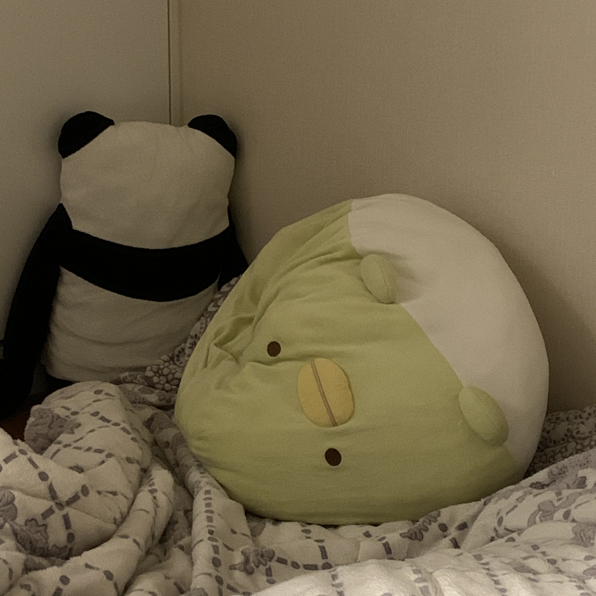이라는 개념을 찾아볼 수 있게 되었다. 그래서 작업을 하다가도 쉬고 싶을 때 나만의 ‘최소한의 공간’이 보장되길 기대했고, 그 자취방에서만큼은 어떤 일을 해도 ‘최소한’을 지키자는 다짐을 했다. 여기서 최소한이란 수나 정도 따위가 가장 적음이며, (사전 기반으로) 최소한의 공간이란 어떤 물질이나 물체가 존재할 수 있거나 어떤 일이 일어날 수 있는 가장 적은 자리이다. 그러나 이 정의로 며칠 살아본 자취방을 보았을 때 그곳은 나만의 ‘최소한의 공간’이 되지 못하고 있다. sns, 어플리케이션 등의 알림이 ‘최소한’이 아니었기 때문이다. 와이파이나 데이터를 끄지 않는 이상 이 알림을 피할 수가 없고 학교에서도, 집에서도 끊임없이 어떤 일을 접해야 했다. 그리고 그 일은 나를 새로운 관계망으로 들어가게 하거나 어떤 관계망을 끊을 수 없게 한다. 이렇게 나는 물리적인 나만의 공간에서도 가상에서 만들어지는 공간/관계망의 확장을 경험해야했다. 나만의 공간을 지키지 못하고 나의 다짐을 지키지 못할 위기에 처해있다.
2020
-
궁금하다.
20.03.15나는 그냥 공간에서 지내는 사람들의 이야기가 궁금하다.
그 사람들이 이유 없는 행동을 하진 않을 텐데 저 사람은 왜 저기에 앉아있고,
저 사람은 왜 저기서 누워있지? 저들이 조금 더 편하게 움직일 수 있는 공간, 조금 더 즐겁게 지낼 수 있는 공간이 있었으면 좋겠다.라는 작은 소망 같은 무언가가 나의 미친 학교생활의 시작이었다. 처음엔 사람들과 소통할 수 있는 공간에 관심이 생겼고, 그다음엔 겹겹이 쌓여가는 도면에,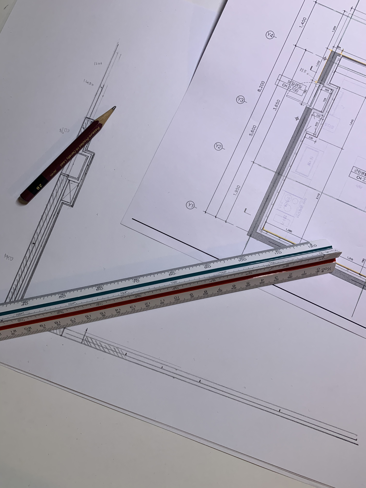그다음엔 공간을 만드는데 필요한 이해관계자들, 그다음엔 그들을 둘러싼 제도나 규칙 같은 것에 흥미가 생겼다. 그래서인지 요즘엔 어떤 공간을 보고 있으면, 그 공간에 대한 아이디어를 가진 사람들의 글을 다 읽어야 직성이 풀린다. 하나하나 읽고 내 생각은 어떤지 생각해보다가 다른 사람의 생각이 궁금해져 또 다른 글을 찾고,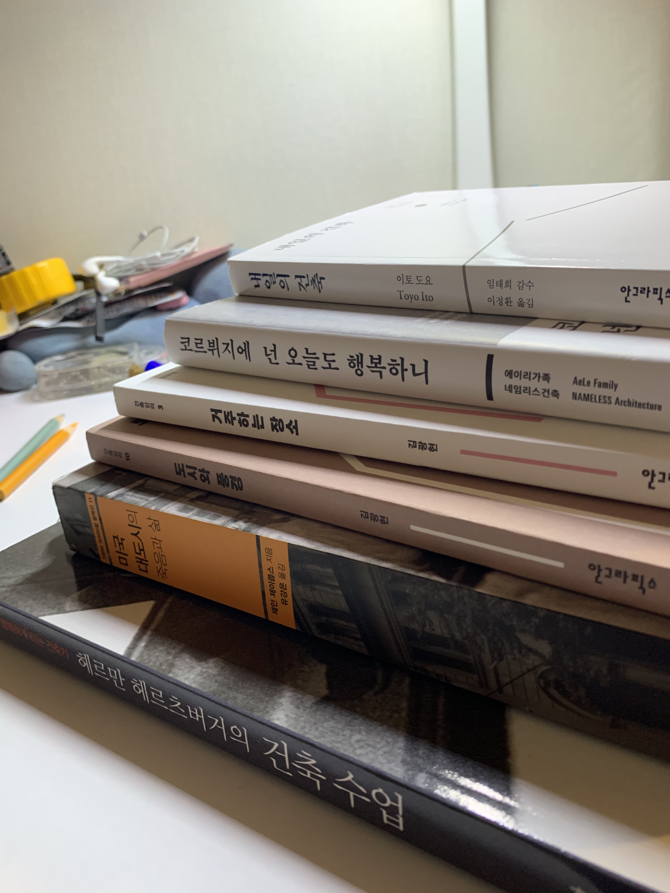그 과정에서 몰랐던 제도를 알게 되고 다시 그 제도에 대한 어떤 생각을 하는 사람들의 글을 읽고 그 생각에서 비롯한 설계를 들고나온 사람도 보고. 무한의 굴레 속에서 매일매일을 생각-생각, 검색-검색, 생각-생각, 검색-검색을 반복한다.오늘은 나를 열 번이나 칭찬할 거야
20.04.06하나.
5일 만에 지원사업 공모를 잘 써서 냈다! 결과가 어떻게 될지 모르겠지만 일단 수고했다.
둘.
지난주부터 새로운 디자인 연구소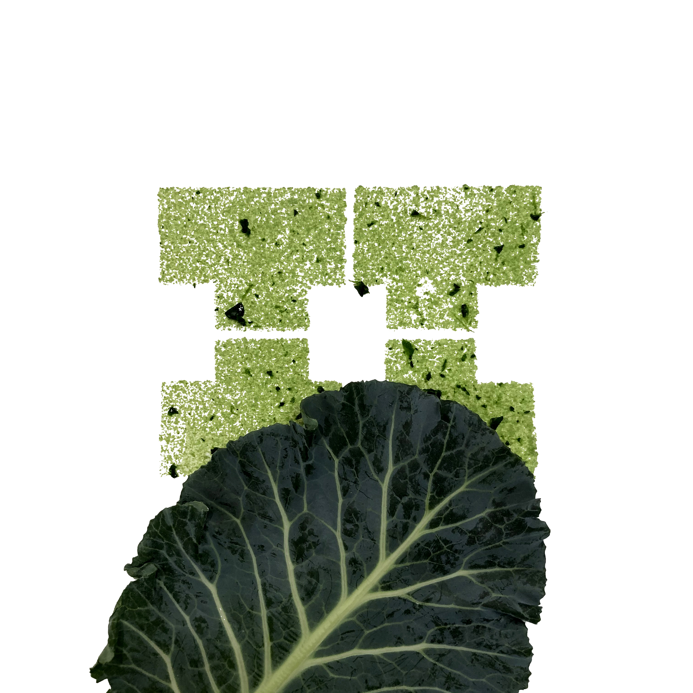에서 일하기 시작했다. 잘 지원했고 잘해보자.
셋.
그래서 이제 새로운 공부도 하고 있다. 토요일엔 책도 주문했다. 내일이면 도착할 것 같다. 더 열심히 공부해야지.
넷.
졸업 후에 밥 벌어먹을 궁리를 열심히 하고 있다. 이 궁리가 어느 정도 구체적으로 나오면 새로운 것을 배워볼 생각이다. 정말 하고 싶은 게 많다.
다섯.
가끔 현실이 눈앞에 다가와 나에게 “빨리 졸업하고 취업해!”라고 말하지만, “그래도 아직 어린 거니까 나는 더 많이 배우고 지금을 즐길 거야!”라며 물리치고 있다. 더 열심히 물리쳐야겠다.
여섯.
돈을 벌어야 하더라도 내가 배우고 싶은 걸 배우면서 벌 수 있는 방법을 찾고 있다. 정말 부지런하다.
일곱.
이번학기에는 수업을 정말 많이 줄였다. 지난학기에는 11개나 들었다면 이번학기에는 3개만 듣고 있다. 정말 잘한 선택이다. 나에게 시간을 주고 싶다.
여덟.
몇 달 전부터 점심, 저녁 두 끼를 잘 챙겨 먹고 있다. 이건 기적이다. 이제는 과제나 공부보다 나의 건강을 조금 더 챙겨보고 싶다.
아홉.
지난달엔 CAD를 배웠다. 이제는 포토샵, 일러스트, 인디자인, CAD를 할 수 있다. 능력치가 올라갔다. (사실 모든 프로그램을 다 잘 다루지는 못하지만) 그래도 이런 프로그램으로 하나의 작업물은 만들 수 있다는 게 얼마나 대단한 일인가 싶다. 멋져.
열.
잘하고 있다. 이번 학기가 많이 밀렸고 생각이 많아 뒤숭숭한 학기가 되겠지만 잘하고 있다. 뭐든 하면 되는 거야. 지쳐서 쓰러지지만 말자.<입체와 공간2>를 마치며
20.06.22학기 초에 베니스 덕분에 슬퍼하다가 다시 마음을 잡고 학기를 다니기 시작했다. 그중 하나는 입체와 공간2였다. 재료와 구조를 배우는 수업으로 실제 지어지고 있는 공간 안에 들어가는 가구를 만들어보는 것이 최종 목표였다. 그냥 공간 수업은 그동안 다 들어왔고 좋아하니까 하는 생각으로 듣기 시작했다. 이미지 수업보단 좋았으니까. 수업 초반에는 최소한의 유니트에 대해서 공부하고, 지어지고 있는 공간의 도면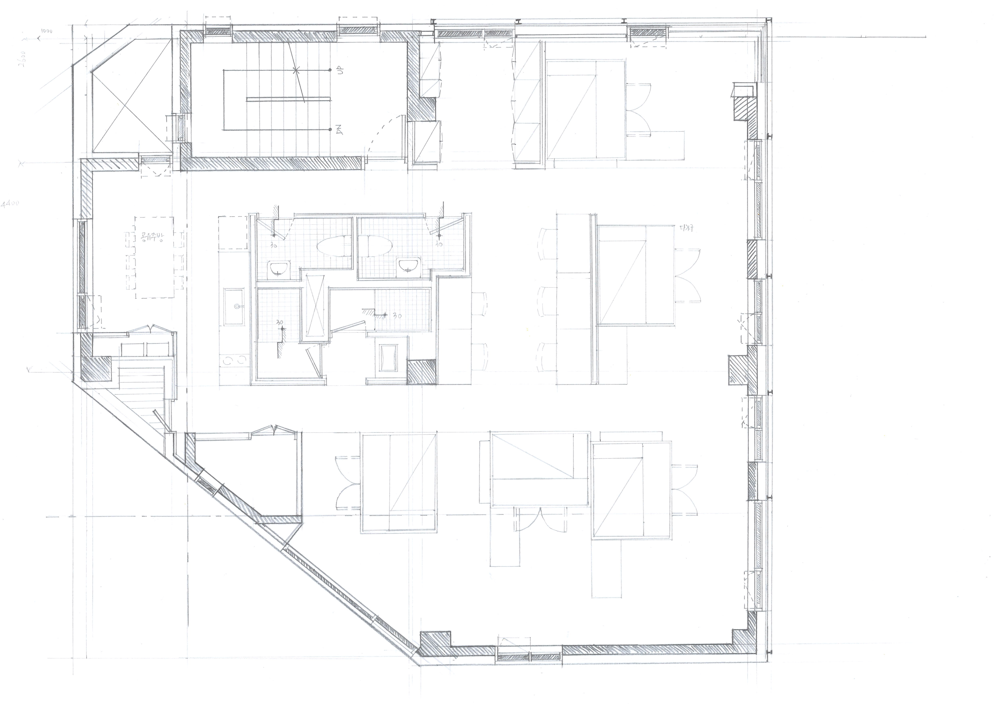을 봤다. 봤는데 처음 가장 포착한 (내가 생각하는) 문제점은 옷장의 공간이 열린 공간이었다. 내가 침대까지는 다른 사람과 쓸 수 있는데 옷장, 옷 갈아입는 공간만큼은 사수해야겠다는 생각이 들었다. 그래서 옷장을 가장 사적 공간으로 두고 그 주변을 유동적인 공간을 만들 계획을 잡았다.침대 또한 혼자 자는 것이 보장되어야만 할 것 같아 침대와 옷장의 결합을 만드는 계획을 잡았고 그걸 종이로 만드는 것이 목표였다. 일명 종이 가구! 처음엔 재밌게 시작했다. 해보고 싶었던 재료였고 그게 폐기물에서 조금은 멀어질 거라 믿었다. 하지만 만들면서 이런저런 종이 구조가 힘을 전혀 받지 못하고, 마감되어 보이지 않는 것 때문에 큰 난관에 부딪혔다. 그래도 처음 세운 목표는 이루어보겠다고 끝까지 종이를 고집하며 구조에서 풀어내려고 노력했다. 내가 노력하고 공부하면 해결책이 나올 거라 믿었다. 하지만 역시나 나도 알고 있듯이 열심히 하는 것과는 별개로 이 가구가 나의 마음에서 멀어지고 있는 게 느껴졌다. 괜히 알지도 못하는 종이를 하겠다고, 제대로 접지를 해보지도 않고 제대로 종이 재료를 알아본 적도 없으면서 해보겠다고. 뭘 그렇게 덕지덕지 종이만 갖다 붙이는지. 오히려 폐기물에 점점 더 가까워지고 있었다. 다른 친구들이 다른 재료와 물성을 이용하는 걸 보면서 흔들리고 많이 흔들렸다. 그냥 볼트/너트 결합하고 다른 물성을 테스트해볼걸. 너무 고립된 것 같고 편협해지는 것만 같았다. 만약 내가 쓸데없는 고집을 부리는 거면 어떡하지. 내가 고집부린 게 결국 다 틀린 답을 말하는 거면 또 쓰레기를 만들고, 애써 생각해 간 구조도 내가 봐도 내가 생각해도 해결방안이 되지 못할 법한 구조였고, 내가 말하면서도 내 말에 확신이 서질 못했다. 마지막까지 만든 모형도 차선이지 최선이 아니었다. 아니 정확히 말하자면 과제 수행단계에선 차선이었지 나의 상태나 마음에선 최선이었다. 정말 많은 생각이 오갔다.
내가 노력하고 공부하면 해결책이 나올 거라 믿었다. 하지만 역시나 나도 알고 있듯이 열심히 하는 것과는 별개로 이 가구가 나의 마음에서 멀어지고 있는 게 느껴졌다. 괜히 알지도 못하는 종이를 하겠다고, 제대로 접지를 해보지도 않고 제대로 종이 재료를 알아본 적도 없으면서 해보겠다고. 뭘 그렇게 덕지덕지 종이만 갖다 붙이는지. 오히려 폐기물에 점점 더 가까워지고 있었다. 다른 친구들이 다른 재료와 물성을 이용하는 걸 보면서 흔들리고 많이 흔들렸다. 그냥 볼트/너트 결합하고 다른 물성을 테스트해볼걸. 너무 고립된 것 같고 편협해지는 것만 같았다. 만약 내가 쓸데없는 고집을 부리는 거면 어떡하지. 내가 고집부린 게 결국 다 틀린 답을 말하는 거면 또 쓰레기를 만들고, 애써 생각해 간 구조도 내가 봐도 내가 생각해도 해결방안이 되지 못할 법한 구조였고, 내가 말하면서도 내 말에 확신이 서질 못했다. 마지막까지 만든 모형도 차선이지 최선이 아니었다. 아니 정확히 말하자면 과제 수행단계에선 차선이었지 나의 상태나 마음에선 최선이었다. 정말 많은 생각이 오갔다.
5년 후에 어떤 모습을 한 사람일까?
20.07.307월 한 달동안 지난학기에 아팠던 몸과 마음을 돌보았다. 그러나 그 시간 동안 머릿속엔 온통 밥벌이뿐이었다. 이 일을 하면 내 밥벌이는 할 수 있을까, 이건 얼마나 유지할 수 있을까. 그러다 얼마 전, 함께 일을 하던 사람과 대화하는 와중에 문득 ‘나는 5년 후에 어떤 모습을 한 사람일까?’라는 생각이 들었다. 아마 이 학교를 졸업하고 어떤 회사에 들어가 있지 않을까. 미래의 나는 지금의 나를 그리워하며 제자리에 머물러있는 사람일까? 나는 어떤 일을 하고 싶고, 어떤 사람이 되고 싶은 걸까?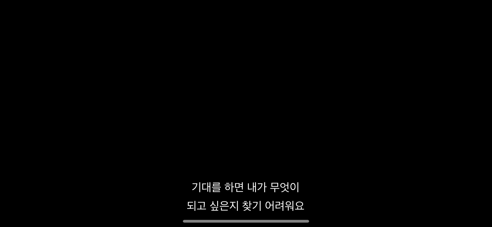혼자 걷고, 일하고, 주변 사람들과 대화를 하며 매일 같이 이 생각을 했다. 매일 같이 생각하니 아주 아주 약간의 선명한 어떤 생각이 들다. 이 학교에서 내가 할 수 있는 디자인을 배우고 싶고, 졸업 후에도 그런 일을 하고 싶고, 그게 어떤 직업이 될지는 모르겠지만 직업보다 나의 작업을 가진 사람이 되고 싶다. 세월이 흘러서는 본질을 보고 건강한 생각을 하는 사람이 되길 원하고, 깊은 생각을 가진 사람이 되어 과거의 내가 가졌던 고민을 하고 있는 사람들을 만나 이야기를 나눌 줄 아는 사람이 되고 싶다. 또, 새로운 일을 두려워하지 않고 하고자 하는 일이, 해야 하는 일이 작은 변화를 일으킬 수 있는 일이라면 주저 말고 도전하는 사람이 되고 싶고, 나이에 얽매이지 않고 한 사람으로서 갖고 있는 생각으로 받아들이고, 받아들여지는 사람이 되고 싶다. 하루에도 수많은 회의를 하고, 메일을 주고받고, 사건사고가 끊이지 않는 학교를 잠시 쉰다고 생각하니 이제야 보이지 않던 것들이 보인다. 이제 나는 잠시 나만의 생태계를 가질 시간이 필요한가 보다. 아직은 생각이나 경험이 어리기 때문에 그런 사람이 되려면 한참 멀었지만 지금 한 생각들이 쌓이고 쌓여 생각과 마음이 건강한 사람이 되었으면 좋겠다.생각하고 행동하자, 생각하고 말하자
20.10.28지난 주말엔 새로운 전시 설치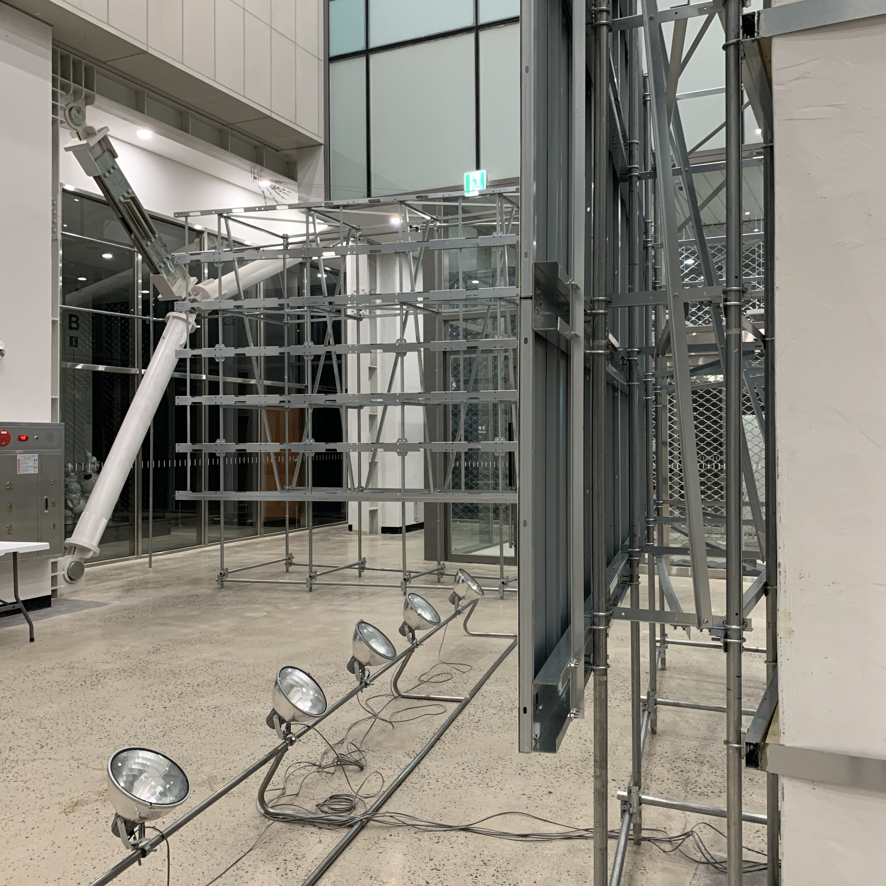를 갔다왔고,오늘은 새로운 프로젝트 회의를 했고, 내일은 새로운 사무실 알바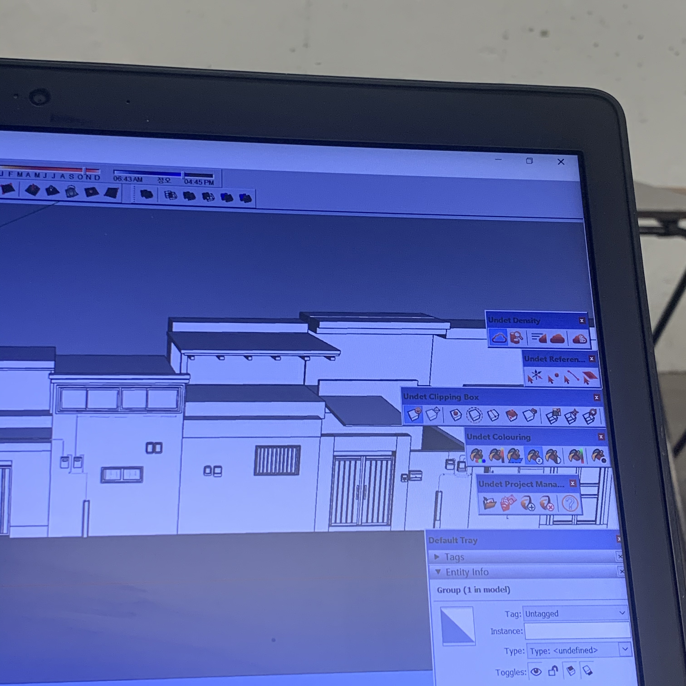를 가기로 했다. 휴학중임에도 불구하고 제법 바쁜 하루를 보내고 있다. 여기저기 다니면서 가장 먼저 든 생각은 ‘내가 그래도 쓸모있는 사림이었구나. 다행이라’라는 생각과 ‘체력관리를 더 잘하고 정말 정신 바짝차리고 살아야겠다.’라는 생각. 그래서 얼마 전부턴 자기 전에 다이어리를 확인하고 캘린더를 확인하는 습관이 생겼다. 매일 사소한 일정과 사소한 메모를 전부 적고 있다. 예를 들면 언제 어디서 누구를 만나 무엇을 했는지, 어떤 생각이 들었는지, 잊지말아야 할 키워드, 혹은 이 주제를 가지고 이야기할 때 알아보아야 하는 것들, 읽어보야 하는 책들 같은 것들을 적는다. 이게 도움이 되고 있는 건지는 모르겠지만 이런 습관이 생겼다는 것만으로도 스스로를 대견하게 여기고 있다. 지금 하고 있는 일들이 올해 12월 마감인 것들이라 절대로 긴장을 놓쳐서는 안될 것만 같다. 이런 나에게 얼마 전부터 계속 되새기고 있는 말들이 있다. 생각하고 행동하자. 생각하고 말하자. 천천히 문제를 해결하자.
2021
-
너희는 어떤 상태니?
21.02.20졸업하는 배우미들에게 줄 식물 몇 개가 우리 집에 와 있다. 관리하기 어려운 고사리와 마오리, 아스파라거스가 와 있다. 우리 집에는 원래 10개의 화분이 있다. 산데리아나, 이름 모를 덩굴성 식물, 휘트니아 화이트, 뱅갈고무나무, 유칼립투스 모종 3개, 마오리 소포라, 아스파라거스 이렇게 말이다. 이 아이들은 전부 해를 잘 받는 창가 쪽에 위치해 있다. 지금 나는 이 아이들과 1m 정도 떨어진 옷장에 기대어 앉아있다. 이렇게 앉은 채로 이 아이들을 보니 문득, 너희는 전부 다 다른 곳에서 자생하는 식물들인데 어떻게 여기에 와있는 걸까?라는 말을 건네고 싶었다. 습지에 사는 식물, 양지에 사는 식물, 반음지에 사는 식물. 정말 다양한 식물이 우리 집에 와 나와 함께 살고 있다. 물론 내가 데려온 것이기 때문에 저 식물들에겐 선택권 자체가 없었다. 나의 욕심, 이기심이라도 해도 과언이 아닌 것 같다. 그래도 내가 여기서 이렇게 정성껏 돌보아 주고 있는데, 쟤네는 만족스러울까? 사실 이 의문에는 답을 구할 수 없다. 과학적으로 식물은 뇌가 없기 때문에 감정이라는 것 또한 없다고 판단하기 때문이다.
휘트니아 화이트, 뱅갈고무나무, 유칼립투스 모종 3개, 마오리 소포라, 아스파라거스 이렇게 말이다. 이 아이들은 전부 해를 잘 받는 창가 쪽에 위치해 있다. 지금 나는 이 아이들과 1m 정도 떨어진 옷장에 기대어 앉아있다. 이렇게 앉은 채로 이 아이들을 보니 문득, 너희는 전부 다 다른 곳에서 자생하는 식물들인데 어떻게 여기에 와있는 걸까?라는 말을 건네고 싶었다. 습지에 사는 식물, 양지에 사는 식물, 반음지에 사는 식물. 정말 다양한 식물이 우리 집에 와 나와 함께 살고 있다. 물론 내가 데려온 것이기 때문에 저 식물들에겐 선택권 자체가 없었다. 나의 욕심, 이기심이라도 해도 과언이 아닌 것 같다. 그래도 내가 여기서 이렇게 정성껏 돌보아 주고 있는데, 쟤네는 만족스러울까? 사실 이 의문에는 답을 구할 수 없다. 과학적으로 식물은 뇌가 없기 때문에 감정이라는 것 또한 없다고 판단하기 때문이다.
너희는 살아있는 거니?
너희는 어떤 상태니?
강박과 불안
21.07.08요즘 자꾸 내가 잘 살고 있는 건가 라는 의문이 든다. 기준도 정의도 없는 거지만, 정체되어 있는 기분과 무언가를 새롭게 계속 해야된다는 압박감, 공동의 일을 잘 할 수 있을까라는 불안감, 내 작업은 완성할 수 있을까라는 말로 형용할 수 없는 스트레스. 매일 머리가 아프고 금방 기운이 빠진다. 장마 때문인가. 엉엉 울고 싶다가도 아니다가도, 사람을 만나면 괜찮아지다가도 혼자있으면 다시 불안감에 휩싸이고, 속은 너무 쓰리고 아파서 내가 나를 갉아먹고 있는 게 몸 전체에 느껴진다. 불안해서 그런지 하루에 모니터를 20시간을 보고 있다. 아무것도 안해도 계속 보고 있다. 머리에 계속 무언가를 집어넣으려고 한다.
강박일까
불안일까
강박에서 오는 불안일까이제는 여유를 조금 알 것 같다.
21.07.19역시 하루를 마치고 대중교통을 타고 집에 돌아가는 길에는 일기를 쓰게 된다. 특히나 너무 많은 사람과 너무 많은 장면을 보고 너무 많은 경험을 한 하루에는 일기를 꼭 쓰게 된다. 요즘은 내 작업은 안 하고 이것저것 찾아보고 이곳저곳을 다니며 이런저런 사람들을 만나고 있다. 지금은 방학인걸? 가끔은 쉼도 필요하지.라며 내 작업을 안 본 지 한 달이 넘었다. 그래서인지 새벽이 되면 불안에 떨며 내일은 꼭 해야지를 다짐하지만 역시나 하지 않는다. 불안이 스트레스가 되어 약간? 살이 빠졌지만 살이 빠진 게 우습게도 요즘 난 행복하다. 먹고 싶은 것을 먹고, 자고 싶을 때 자고, 만나고 싶은 사람들을 만나러 다니고.
예전에는 여유를 갖기 위해 여유를 좇으며 집착하고 여유롭지 못한 나에게 실망하고 괴로워했는데 이제는 여유를 조금 알 것 같다.
여유는 내가 선택한 나를 이루는 주변 상황이 만들어주는 것 같다.난 잘 살고 있다.
21.07.22난 잘 살고 있다.!
유연하게 행동하고 유연하게 일을 꾸려나가는
21.08.03내가 하고 있는 일들은 설명하기 어려운 일들이 있다. 몸 쓰는 일도 하면서 기획일도 하고 가끔 필요하면 편집도 잠깐 했다가 이모양 저모양으로 일하고 있다. 다들 나에게 졸업작업은 뭐하냐, 졸업후에는 어떤 일을 하냐라고 물을 때마다 나는 현재 하고 있는 일을 소개하곤 한다. 어떤 일로 정의내려지고 그 일로만 불리기보다는 다양한 일을 하면서 계속 다양한 배움을 경험하고 싶기 때문이다. 욕심이고 허무맹란한 이야기일 수도 있겠지만 직업이나 역할로 불리고 싶지는 않다. 유연하게 행동하고 유연하게 일을 꾸려나가는 것.
이게 디자이너라면 디자이너이고, 기획자라면 기획자고, 아르바이트라면 아르바이트인 것 같다.
일이 있는 곳에 내가 갈 수도 있고, 내가 있는 곳에 일이 있을 수도 있고.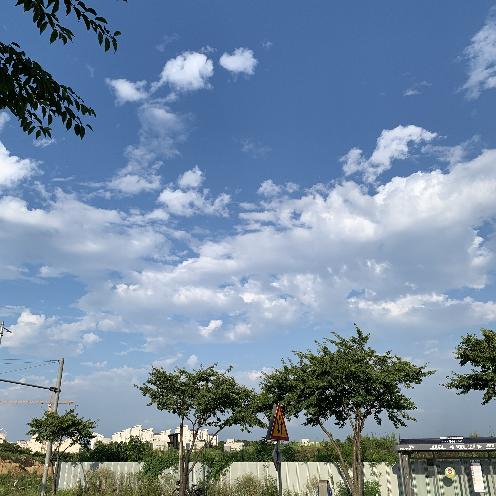솔직히 미래에 어떤 일을 하며 돈을 벌고 있을지는 딱히 걱정되지 않는다. 내가 그 일에 만족하며 어떤 마음가짐으로 살고 있느냐가 걱정된다.내 마음만큼은 큰 변화가 있다.
21.08.22일상이나 작업에는 큰 변화가 없지만 내 마음만큼은 큰 변화가 있다. 어느 때보다 핸드폰에 의지하고 있고, 그 어느 때보다 졸업작업에 대한 꿈을 꾸고, 일어나서 멍한 상태로 현재 내가 해야 하는 일에 대해 제작 과정과 시나리오에 대한 시뮬레이션을 미친 듯이 굴리고 있다. 나는 잘하고 있는 걸까.
사실, 현재 지금은 잘못해도 어떻게든 시간은 흐르고 작업은 진행된다.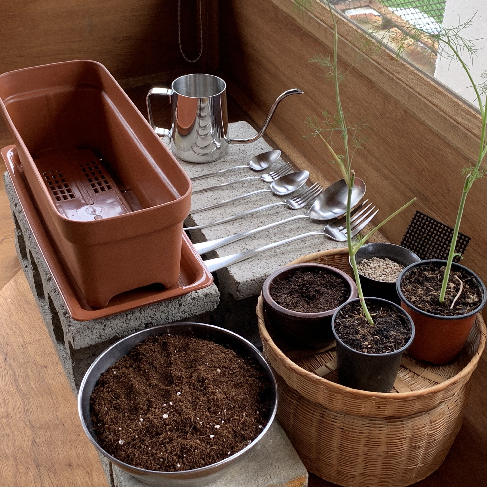
심사도 보고, 졸업도 하고, 앞으로 일도 해야 하니까. 강제로 어떻게든 진행된다. 하지만 내가 걱정하는 것은 내가 만족할 만큼의 완성도로 꿈에 그리던 졸업을 할 수 있을까에 대한 걱정. 그 이후에는 그 너머에는 난 무엇을 하며 살고 있을까에 대한 걱정. 졸업이 전부가 아니고 이후에 인생이 끝나는 것도 아니지만 이 작업으로 어느 정도 새로운 인생이 꾸려나가지는 것은 사실인 것 같다. 사람이 아직 걸어가지 못한 길에 두려움을 갖는 것은 당연해, 괜찮아. 라고 다짐하지만 다짐과 아는 것과 현재 내가 느끼는 감정은 같을 수 없으니까. 엉엉 울면서 그만하고 싶지만 멈출 수 없는 이유가 크고 얼른 졸업해야 진짜로 독립하는 것 같으니까 그냥 한다. 일단 한다. 죽이 되든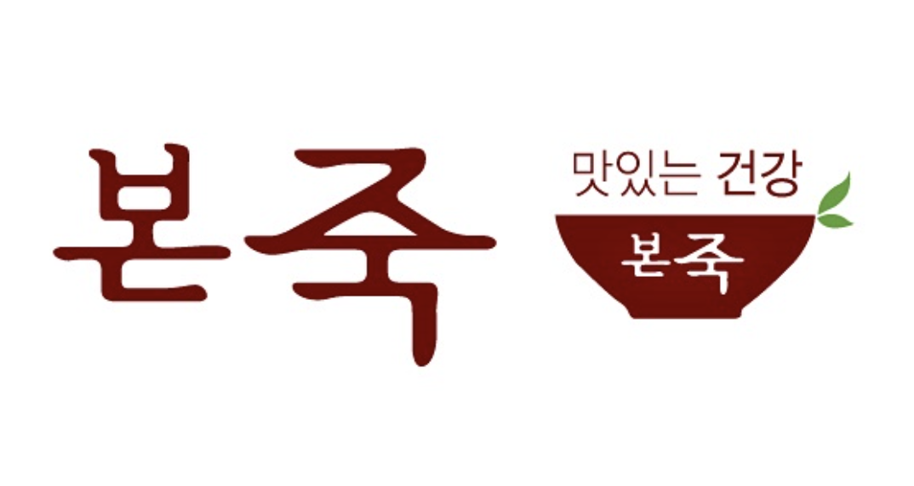밥이 되든 박치기가 답.보이지 않는 디자인
21.10.16파티에 와서 디자인에 대해 다시 생각해보고, 진정성 있는 디자인이란 무엇일까에 대해 고민해보고, 눈에 보이지 않는 맥락과 행위에 대해 여러 설계를 해보면서 문제해결을 위한 디자인을 배웠다. 이걸 칭하는 단어는 경험 디자인이라고 할 수 있는 것 같다.
이에 대한 배움의 결과물로 졸업작업을 하고 있다.이 과정이 얼마나 길고 힘들었는지 아무도 관심 없겠지만, 실제로 시각 요소가 얼마 없어서 해낸 것이 별로 없어 보이겠지만 나는 이것들이 꽤 중요한 과정이라고 믿고 있다. 추구하는 가치의 결이 맞는 지도스승을 만나 나를 믿어주는 분과 함께해서 어느 정도 마음의 짐을 덜었지만, 가끔은 나도 스스로를 믿지 못해 갈팡질팡 하며 한 달이란 시간을 날려버리기도 하고, 면담하다가 스스로가 답답해서 울기도 했다.
면담하다가 스스로가 답답해서 울기도 했다.
그럼에도 불구하고 나에게 잘하던 거 잘하라며 다른 사람들 이야기는 그만 듣고 이제는 스스로를 믿으며 작업에 집중 하라는 지도스승의 말 덕분에 다시 마음을 굳게 먹고 움직이고 있다. 졸업 후에도 지속적으로 하고 싶은 작업이라 기초를 다지는데 더 오래 걸렸지만 재밌게 끝까지 해볼 생각이다. 졸업 전시까지 해야 할 일은 엄청 많지만 아주 재밌을 것 같고 전시가 기대된다.